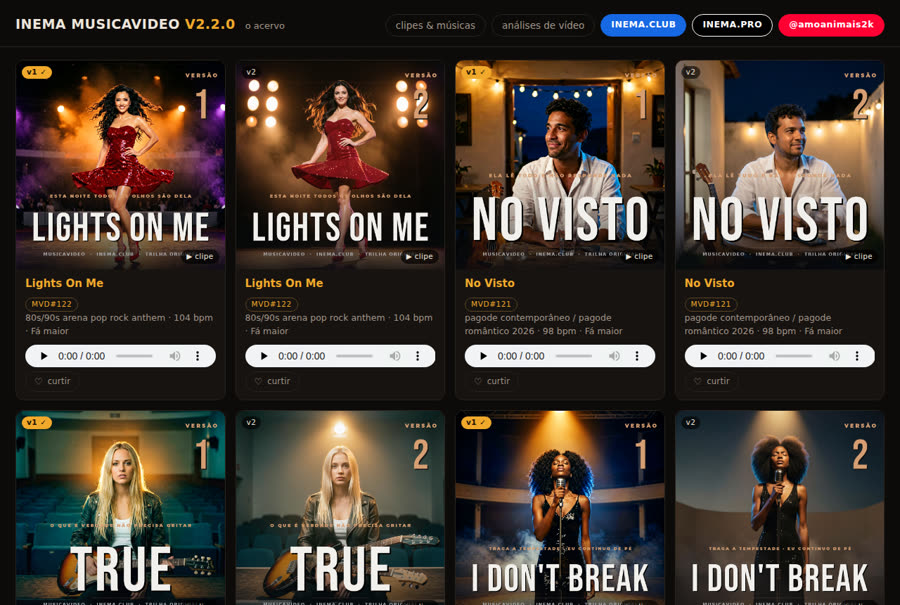
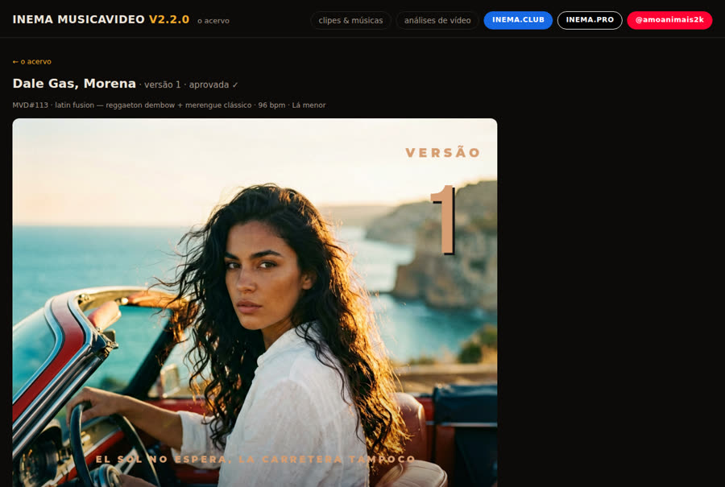

Os clipes, as faixas e as capas moram num dataset público do Hugging Face e o navegador busca direto lá. Esta app carrega só o texto — e por isso é leve, barata e não cai junto com a mídia.
Vídeo é o arquivo mais caro de servir e o mais chato de hospedar. Aqui ele simplesmente não passa por esta app: o que viaja no deploy é texto, e o pesado fica onde já é servido de graça e com range request.
Clipes, faixas e capas vêm do dataset público Inematds/musicavideo-acervo. O resolve/main do Hugging Face responde range request — a barra do vídeo navega sem proxy nenhum, e a app não paga banda nem storage.
Títulos, letras, prompts e a decupagem vêm de um manifest.json versionado no próprio repo. A página desenha sem uma viagem de rede — se o Hugging Face cair, ela ainda mostra o acervo inteiro em texto.
O Suno entrega duas faixas por pedido, e cada uma é uma música diferente: mesma letra, outra interpretação. Cada faixa tem seu card, seu endereço e sua página, com o clipe abrindo em cima.
Esta app é a ponta de um caminho que começa no painel local do musicavideo — a bancada onde se ouve, se compara e se manda para a lixeira. Subir não é consequência de ficar pronto: produção pronta é material de trabalho, vitrine é escolha.
A app sobe sem chave nenhuma — o acervo é público e o manifesto está no repo. Só o like precisa de infraestrutura, e sem ele a vitrine continua sendo vitrine.
Next.js 16, sem banco e sem dependência de serviço para renderizar. O manifesto é importado como módulo.
npm install npm run dev # http://localhost:3000
Dataset público, escrito pelo musicavideo publica-hf. Trocar de dataset é uma variável.
# opcional — o default já é este HF_REPO=Inematds/musicavideo-acervo
É a única escrita do público, e por isso a app não é HTML estático puro. Sem estas variáveis a app continua de pé: o contador some e o clique não persiste.
KV_REST_API_URL
KV_REST_API_TOKEN
# na Vercel: Storage → Upstash RedisOs comandos com musicavideo rodam no repo do pipeline (inematds/musicavideo); os de npm, aqui.
Um clique no card marca a produção no estado.json. Desmarcar não apaga o que já subiu — gera uma pendência de remoção, executada na próxima publicação.
musicavideo painel # a bancada, em :5400 musicavideo nuvem MVD#113 # ou o botão no card
Sobe para o Hugging Face só o que mudou, escreve o manifest.json neste repo e commita. Rodar duas vezes seguidas não relê nada.
musicavideo publica-hf --dry # o que subiria, sem subir musicavideo publica-hf # sobe, escreve o manifesto, commita e empurra musicavideo publica-hf --manifesto # só o metadado, sem reenviar mídia
O manifesto é importado como módulo, então a app funciona offline para tudo que é texto — a mídia é que precisa de rede.
npm install npm run dev # :3000 npm run build # confere que todas as páginas geram
Cada produção tem um número — o mesmo do bot que a gerou — e cada faixa é uma página. A rota antiga por produção continua respondendo e manda para a versão aprovada.
/mvd-113-v1 # a faixa 1 daquela produção /mvd-113-v2 # a faixa 2 — mesma letra, outra interpretação /mvd-113 # rota antiga: vai para a versão aprovada /analises # o que o analisevideo mediu de vídeos reais
Na Vercel: Storage → Create Database → Upstash Redis, conectar ao projeto e reimplantar — as variáveis são injetadas sozinhas. O token tem de ser o de escrita; o read-only não serve.
# o contador é um INCR atômico por faixa: MVD#113:1 curl "$URL/api/like?mvd=mvd-113:1"
É o único sinal de público que o projeto tem. Sem esse retorno ele morreria aqui.
MUSICAVIDEO_PUB_URL=https://sua-vitrine.vercel.app \ musicavideo likes # vira ♥ em cada card do painel local
Importar este repo na Vercel com Root Directory ./. Daí em diante o webhook faz o resto — não há passo manual de deploy.
git push # o deploy é do webhook git → Vercel
Capturas da app real, com o acervo de hoje: 27 produções e 53 músicas.


A V1 (o painel local) e a V2 (esta vitrine) são dois apps, não uma migração: desligar esta não desliga aquela.
MVD#113), e a aba de análises de vídeo.publica-hf sobe só o que mudou e termina no git push do manifesto — nada de subir gigabytes e a vitrine seguir desenhando a versão anterior.musicavideo likes roda à mão. Curtida chega quando o público clica, não quando se aprova — é a única parte do ciclo sem gesto humano natural para disparar.